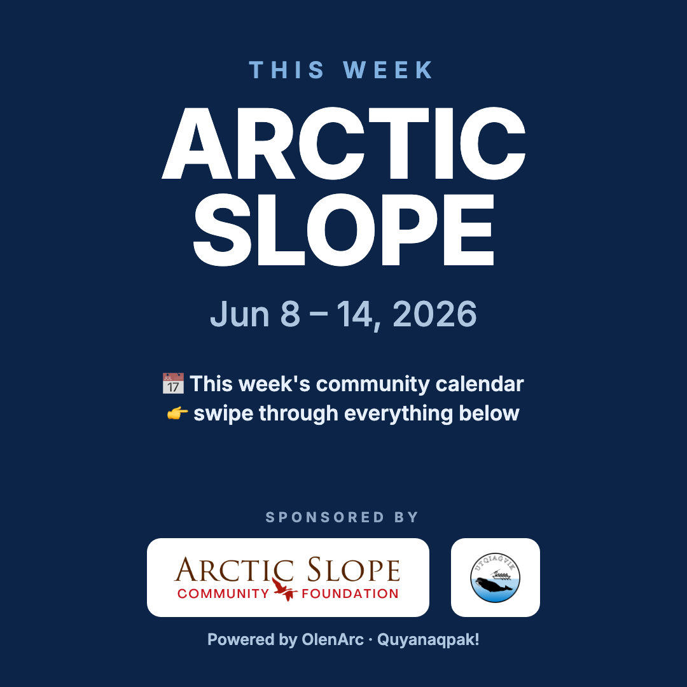
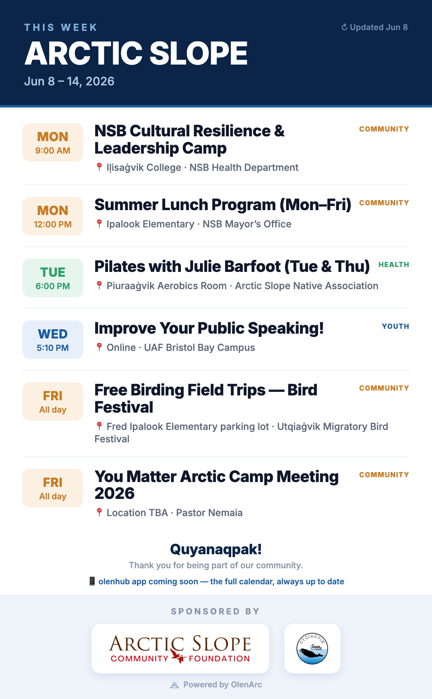
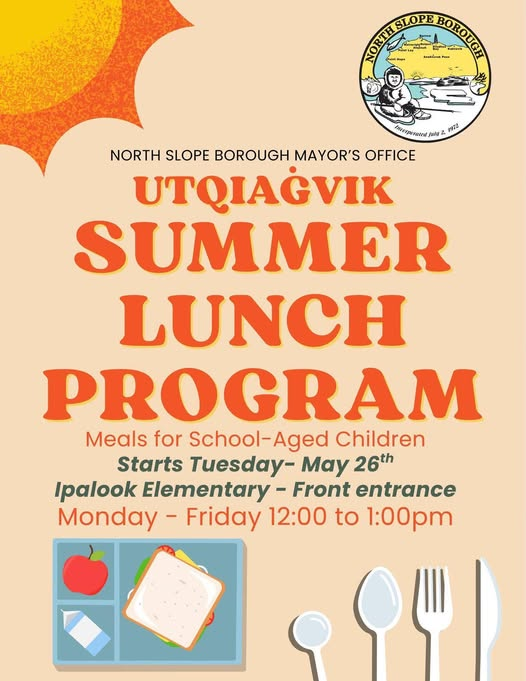
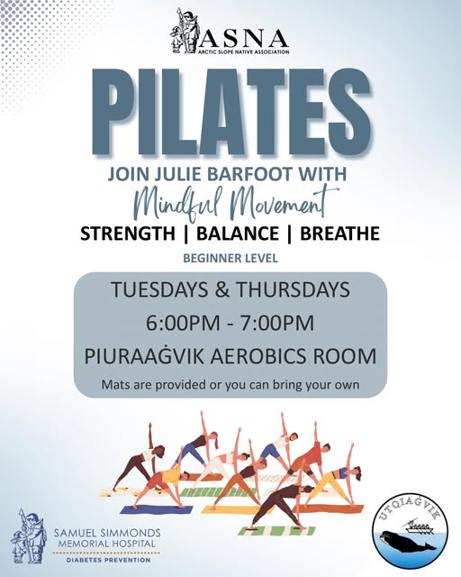

📣 This week's Facebook post — ready
This week = a 10-photo post (1 calendar + 9 flyers) + 1 caption.
How it looks in the feed
Utqiaġvik Update
People see a 2×2 grid (tiles get cropped). They tap to swipe through all 10 full-size. That's why the calendar is photo #1.
📹 ASCF teases a new community initiative (VHF channel 68)
Plays here for preview. In the FB post the video stays as the link in the caption — so ASCF (sponsor) keeps the views.
Save these 10 photos · in this order
1

The calendar (cover)
2

The full calendar (this week)
3
NSB Cultural Resilience & Leadership Camp (Jun 7–13)
4

Summer Lunch Program (Mon–Fri)
5

Pilates with Julie Barfoot (Tue & Thu)
6
Free Birding Field Trips — Bird Festival (Fri–Sun, sign up)
7
Presentation Skills Class
8
Chess Club
9
Migratory Bird Festival — Art Marketplace
10
2026 Quality of Life Survey — win 1 of 8 $500 prizes
📱 Long-press each → Save to Photos. Save all 10.
The caption
How to post
- Long-press each photo above → Save to Photos (all 10).
- Tap Copy caption.
- Open the Utqiaġvik Update Facebook group → Create post.
- Add the photos (calendar first), paste the caption, post. ✅
Auto-generated from olenhub · week of 2026-06-08